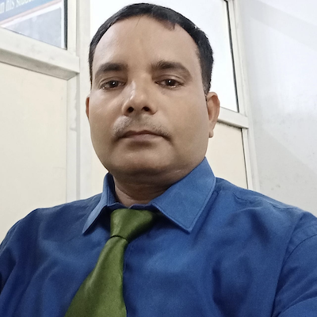

 Since its inception, the Department of Journalism and Mass Communication has exhibited academic excellence in all spheres of Media Education. We are committed to excellence, knowledge, innovation, entrepreneurship and comprehensive growth of education and recognize the hidden potential and strengths of its students and enable them to learn, grow and evolve into successful media professionals. The atmosphere at DJMC focuses on evolving effective, efficient, confident and knowledgeable professionals with global thinking and a futuristic mindset. Insights on communication skills, goal setting, time management, development of positive attitude & problem-solving approaches, team building, values & ethics are delivered through classroom discussions, fieldwork, and industry visits.
Chhatrapati Shahu Ji Maharaj University’s Department of Journalism and Mass Communication functions with the motto of “Building Intellectuals of Tomorrow”. The idea is achieved by preparing the students to be vanguards for the ordinary citizens of society. Media studies Courses are developed keeping in mind the overall development of the students while training them to be highly compatible with the latest innovations and developments in all domains of the Media profession. The Media Studies programme’s faculty members are all Doctorate from various sectors of Media Studies and nurture the desire for responsible and creative expression in the student.
Contact Us:Chhatrapati Shahu Ji Maharaj University, Kanpur(Formerly Kanpur University, Kanpur) Kalyanpur, Kanpur-208024 E-mail: csjmu@kanpuruniversity.org |
|---|